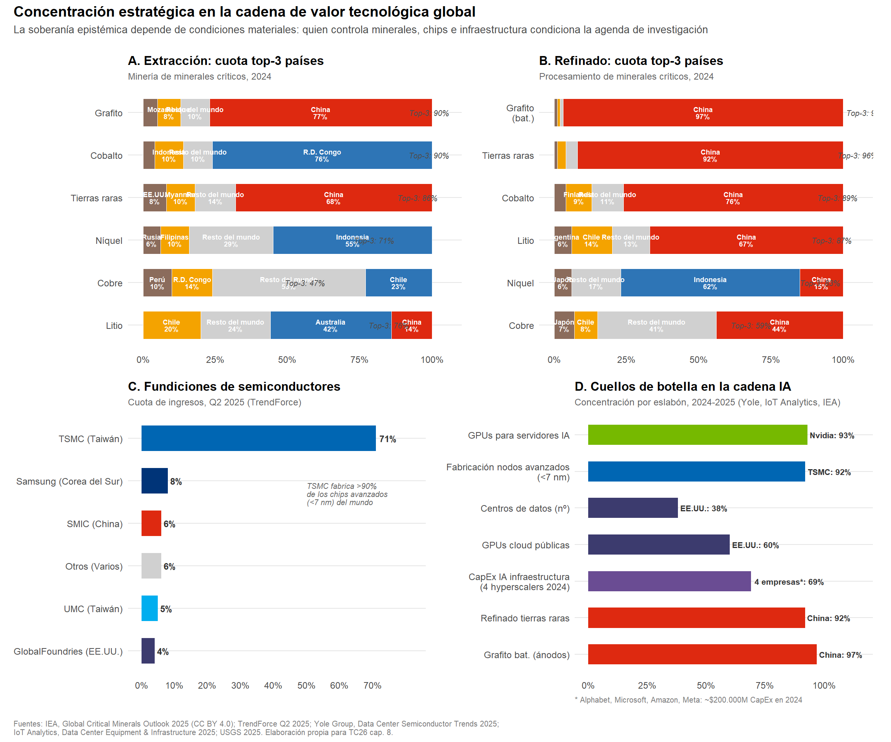

Código
# ─── Paleta consistente ──────────────────────────────────────────
col_china <- "#DE2910" # rojo PRC
col_pais2 <- "#2E75B6" # azul
col_pais3 <- "#F4A300" # ámbar
col_resto <- "#D0D0D0" # gris claro
col_nvidia <- "#76B900" # verde NVIDIA
col_tsmc <- "#0066B3" # azul TSMC
theme_tc <- theme_minimal(base_size = 11) +
theme(
plot.title = element_text(face = "bold", size = 12, hjust = 0),
plot.subtitle = element_text(size = 9, color = "grey40", hjust = 0),
axis.text = element_text(size = 9),
axis.title = element_text(size = 10),
legend.position = "bottom",
legend.title = element_blank(),
legend.text = element_text(size = 8),
panel.grid.major.y = element_line(color = "grey90"),
panel.grid.minor = element_blank(),
panel.grid.major.x = element_blank(),
plot.margin = margin(8, 12, 8, 8)
)
# ══════════════════════════════════════════════════════════════════
# PANEL A — Minerales críticos: extracción (top 3 países, 2024)
# Fuente: IEA Global Critical Minerals Outlook 2025
# ══════════════════════════════════════════════════════════════════
mineria <- tribble(
~mineral, ~pais, ~cuota,
"Tierras raras", "China", 68,
"Tierras raras", "Myanmar", 10,
"Tierras raras", "EE.UU.", 8,
"Grafito", "China", 77,
"Grafito", "Mozambique", 8,
"Grafito", "Madagascar", 5,
"Cobalto", "R.D. Congo", 76,
"Cobalto", "Indonesia", 10,
"Cobalto", "Rusia", 4,
"Litio", "Australia", 42,
"Litio", "Chile", 20,
"Litio", "China", 14,
"Níquel", "Indonesia", 55,
"Níquel", "Filipinas", 10,
"Níquel", "Rusia", 6,
"Cobre", "Chile", 23,
"Cobre", "R.D. Congo", 14,
"Cobre", "Perú", 10
)
# Calcular cuota top-3 y "resto"
top3_mineria <- mineria |>
group_by(mineral) |>
summarise(top3 = sum(cuota), .groups = "drop") |>
mutate(resto = 100 - top3)
mineria_plot <- mineria |>
bind_rows(
top3_mineria |>
transmute(mineral, pais = "Resto del mundo", cuota = resto)
) |>
mutate(
es_china = ifelse(pais == "China", "China", "Otros"),
mineral = fct_reorder(mineral, cuota, .fun = max, .desc = FALSE)
)
# Asignar colores por posición
mineria_colores <- mineria_plot |>
group_by(mineral) |>
mutate(
orden = row_number(),
color_grupo = case_when(
pais == "Resto del mundo" ~ "Resto",
pais == "China" ~ "China",
orden == 1 ~ "País líder",
orden == 2 ~ "Segundo",
TRUE ~ "Tercero"
)
) |>
ungroup()
pA <- ggplot(mineria_colores,
aes(x = cuota, y = mineral, fill = color_grupo)) +
geom_col(position = "stack", width = 0.65, color = "white", linewidth = 0.3) +
geom_text(
aes(label = ifelse(cuota >= 6, paste0(pais, "\n", cuota, "%"), "")),
position = position_stack(vjust = 0.5),
size = 2.4, color = "white", fontface = "bold", lineheight = 0.85
) +
scale_fill_manual(
values = c("China" = col_china, "País líder" = col_pais2,
"Segundo" = col_pais3, "Tercero" = "#8B6C5C",
"Resto" = col_resto),
guide = "none"
) +
scale_x_continuous(
limits = c(0, 105),
breaks = seq(0, 100, 25),
labels = paste0(seq(0, 100, 25), "%")
) +
labs(
title = "A. Extracción: cuota top-3 países",
subtitle = "Minería de minerales críticos, 2024",
x = NULL, y = NULL
) +
# Añadir indicador top-3
geom_text(
data = top3_mineria,
aes(x = top3 + 2, y = mineral,
label = paste0("Top-3: ", top3, "%"),
fill = NULL),
inherit.aes = FALSE,
hjust = 0, size = 2.6, color = "grey30", fontface = "italic"
) +
theme_tc
# ══════════════════════════════════════════════════════════════════
# PANEL B — Minerales críticos: refinado (top 3 países, 2024)
# Fuente: IEA Global Critical Minerals Outlook 2025
# ══════════════════════════════════════════════════════════════════
refinado <- tribble(
~mineral, ~pais, ~cuota,
"Tierras raras", "China", 92,
"Tierras raras", "Myanmar", 3,
"Tierras raras", "Japón", 1,
"Grafito\n(bat.)", "China", 97,
"Grafito\n(bat.)", "Japón", 1,
"Grafito\n(bat.)", "India", 1,
"Cobalto", "China", 76,
"Cobalto", "Finlandia", 9,
"Cobalto", "Bélgica", 4,
"Litio", "China", 67,
"Litio", "Chile", 14,
"Litio", "Argentina", 6,
"Níquel", "Indonesia", 62,
"Níquel", "China", 15,
"Níquel", "Japón", 6,
"Cobre", "China", 44,
"Cobre", "Chile", 8,
"Cobre", "Japón", 7
)
top3_refinado <- refinado |>
group_by(mineral) |>
summarise(top3 = sum(cuota), .groups = "drop") |>
mutate(resto = 100 - top3)
refinado_plot <- refinado |>
bind_rows(
top3_refinado |>
transmute(mineral, pais = "Resto del mundo", cuota = resto)
) |>
mutate(mineral = fct_reorder(mineral, cuota, .fun = max, .desc = FALSE))
refinado_colores <- refinado_plot |>
group_by(mineral) |>
mutate(
orden = row_number(),
color_grupo = case_when(
pais == "Resto del mundo" ~ "Resto",
pais == "China" ~ "China",
orden == 1 & pais != "China" ~ "País líder",
orden == 2 ~ "Segundo",
TRUE ~ "Tercero"
)
) |>
ungroup()
pB <- ggplot(refinado_colores,
aes(x = cuota, y = mineral, fill = color_grupo)) +
geom_col(position = "stack", width = 0.65, color = "white", linewidth = 0.3) +
geom_text(
aes(label = ifelse(cuota >= 5, paste0(pais, "\n", cuota, "%"), "")),
position = position_stack(vjust = 0.5),
size = 2.4, color = "white", fontface = "bold", lineheight = 0.85
) +
scale_fill_manual(
values = c("China" = col_china, "País líder" = col_pais2,
"Segundo" = col_pais3, "Tercero" = "#8B6C5C",
"Resto" = col_resto),
guide = "none"
) +
scale_x_continuous(
limits = c(0, 105),
breaks = seq(0, 100, 25),
labels = paste0(seq(0, 100, 25), "%")
) +
labs(
title = "B. Refinado: cuota top-3 países",
subtitle = "Procesamiento de minerales críticos, 2024",
x = NULL, y = NULL
) +
geom_text(
data = top3_refinado,
aes(x = top3 + 2, y = mineral,
label = paste0("Top-3: ", top3, "%"),
fill = NULL),
inherit.aes = FALSE,
hjust = 0, size = 2.6, color = "grey30", fontface = "italic"
) +
theme_tc
# ══════════════════════════════════════════════════════════════════
# PANEL C — Fundiciones de semiconductores (Q2 2025)
# Fuente: TrendForce Q2 2025 (vía Motley Fool, ene. 2026)
# ══════════════════════════════════════════════════════════════════
foundry <- tribble(
~empresa, ~pais_sede, ~cuota,
"TSMC", "Taiwán", 71,
"Samsung", "Corea del Sur", 8,
"SMIC", "China", 6,
"UMC", "Taiwán", 5,
"GlobalFoundries","EE.UU.", 4,
"Otros", "Varios", 6
) |>
mutate(
label = paste0(empresa, " (", pais_sede, ")"),
label = fct_reorder(label, cuota),
color_f = case_when(
empresa == "TSMC" ~ col_tsmc,
pais_sede == "China" ~ col_china,
pais_sede == "Taiwán" ~ "#00AEEF",
pais_sede == "Corea del Sur" ~ "#003478",
pais_sede == "EE.UU." ~ "#3C3B6E",
TRUE ~ col_resto
)
)
pC <- ggplot(foundry, aes(x = cuota, y = label, fill = color_f)) +
geom_col(width = 0.6, show.legend = FALSE) +
geom_text(
aes(label = paste0(cuota, "%")),
hjust = -0.2, size = 3.2, fontface = "bold", color = "grey20"
) +
scale_fill_identity() +
scale_x_continuous(limits = c(0, 82), breaks = seq(0, 70, 10),
labels = paste0(seq(0, 70, 10), "%")) +
labs(
title = "C. Fundiciones de semiconductores",
subtitle = "Cuota de ingresos, Q2 2025 (TrendForce)",
x = NULL, y = NULL
) +
# Anotación TSMC
annotate("text", x = 50, y = 4.7,
label = "TSMC fabrica >90%\nde los chips avanzados\n(<7 nm) del mundo",
size = 2.6, color = "grey40", fontface = "italic",
hjust = 0, lineheight = 0.9) +
theme_tc
# ══════════════════════════════════════════════════════════════════
# PANEL D — Concentración en infraestructura IA (2024-2025)
# Fuentes: Yole Group 2025, IoT Analytics 2025
# ══════════════════════════════════════════════════════════════════
ia_concentracion <- tribble(
~ambito, ~actor_dominante, ~cuota, ~tipo,
"GPUs para servidores IA", "Nvidia", 93, "Empresa",
"Fabricación nodos avanzados\n(<7 nm)", "TSMC", 92, "Empresa",
"Centros de datos (nº)", "EE.UU.", 38, "País",
"GPUs cloud públicas", "EE.UU.", 60, "País",
"CapEx IA infraestructura\n(4 hyperscalers 2024)", "4 empresas*", 69, "Concentración",
"Refinado tierras raras", "China", 92, "País",
"Grafito bat. (ánodos)", "China", 97, "País"
) |>
mutate(
ambito = fct_inorder(ambito) |> fct_rev(),
color_d = case_when(
actor_dominante == "Nvidia" ~ col_nvidia,
actor_dominante == "TSMC" ~ col_tsmc,
actor_dominante == "EE.UU." ~ "#3C3B6E",
actor_dominante == "China" ~ col_china,
actor_dominante == "4 empresas*" ~ "#6A4C93",
TRUE ~ col_resto
)
)
pD <- ggplot(ia_concentracion,
aes(x = cuota, y = ambito, fill = color_d)) +
geom_col(width = 0.55, show.legend = FALSE) +
geom_text(
aes(label = paste0(actor_dominante, ": ", cuota, "%")),
hjust = -0.05, size = 2.8, fontface = "bold", color = "grey20"
) +
scale_fill_identity() +
scale_x_continuous(limits = c(0, 115), breaks = seq(0, 100, 25),
labels = paste0(seq(0, 100, 25), "%")) +
labs(
title = "D. Cuellos de botella en la cadena IA",
subtitle = "Concentración por eslabón, 2024-2025 (Yole, IoT Analytics, IEA)",
x = NULL, y = NULL,
caption = "* Alphabet, Microsoft, Amazon, Meta: ~$200.000M CapEx en 2024"
) +
theme_tc +
theme(plot.caption = element_text(size = 7.5, color = "grey50", hjust = 0))
# ══════════════════════════════════════════════════════════════════
# COMPOSICIÓN FINAL
# ══════════════════════════════════════════════════════════════════
fig_compuesta <- (pA | pB) / (pC | pD) +
plot_annotation(
title = "Concentración estratégica en la cadena de valor tecnológica global",
subtitle = paste0(
"La soberanía epistémica depende de condiciones materiales: ",
"quien controla minerales, chips e infraestructura condiciona la agenda de investigación"
),
caption = paste0(
"Fuentes: IEA, Global Critical Minerals Outlook 2025 (CC BY 4.0); ",
"TrendForce Q2 2025; Yole Group, Data Center Semiconductor Trends 2025;\n",
"IoT Analytics, Data Center Equipment & Infrastructure 2025; USGS 2025. ",
"Elaboración propia para TC26 cap. 8."
),
theme = theme(
plot.title = element_text(face = "bold", size = 14, hjust = 0),
plot.subtitle = element_text(size = 10, color = "grey30", hjust = 0,
margin = margin(b = 12)),
plot.caption = element_text(size = 7.5, color = "grey50", hjust = 0,
margin = margin(t = 8))
)
)
fig_compuesta
